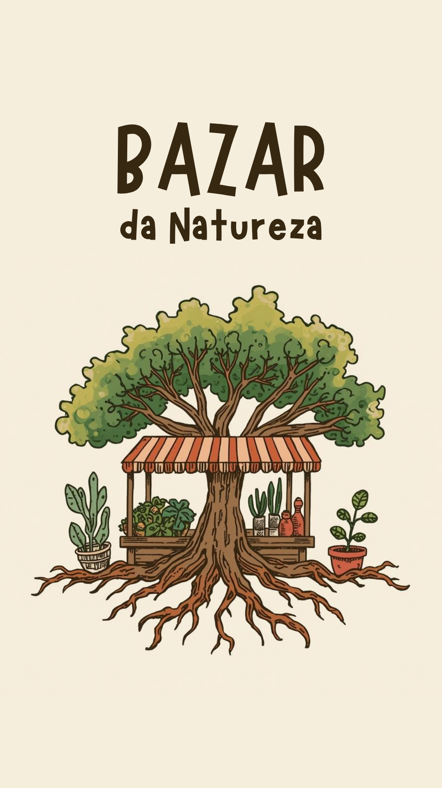

Videoteca Natural
Biblioteca audiovisual sobre plantas medicinais, cultivo, receitas naturais e hortoterapia.
Videoteca natural, hortoterapia, oficinas comunitárias, doação de mudas e saberes ancestrais voltados ao cuidado, reconexão emocional e cultivo afetivo.

O Bazar da Natureza nasce como um espaço afetivo de troca, cultivo, aprendizado e bem-estar através da terra.
Atuamos com hortoterapia, oficinas de jardinagem, doação de mudas medicinais e produção de conteúdo audiovisual sobre plantas, alimentação funcional e saberes naturais.
Conhecimento natural, cultivo afetivo e práticas de cuidado através da terra.
Preparo tradicional de ervas e receitas terapêuticas naturais.
Saberes populares sobre cultivo, uso e propriedades naturais.
Reconexão emocional através da jardinagem e manejo da terra.
Alimentação funcional com PANCs e ingredientes naturais.
Biblioteca audiovisual sobre plantas medicinais, cultivo, receitas naturais e hortoterapia.
Jardinagem, cultivo e manejo da terra como ferramenta terapêutica e emocional.
Distribuição solidária de plantas medicinais, alimentícias e ornamentais.
Hortelã, boldo, erva-cidreira, capim santo, mastruz e mais.
Ora-pro-nóbis, taioba, folha de uva e alimentos funcionais.
Árvores destinadas ao cultivo urbano e recuperação ambiental.
Faça parte desta rede de cuidado, natureza, hortoterapia e saberes ancestrais.
Explorar Videoteca